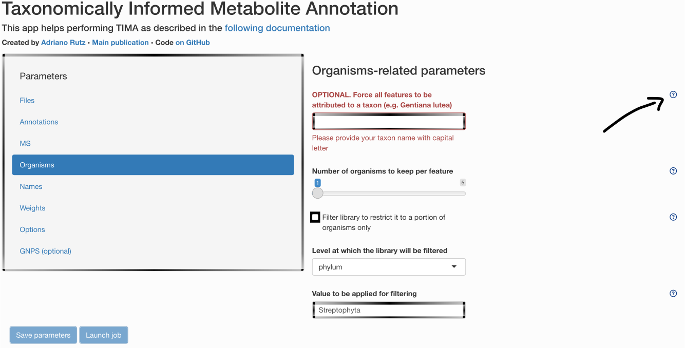
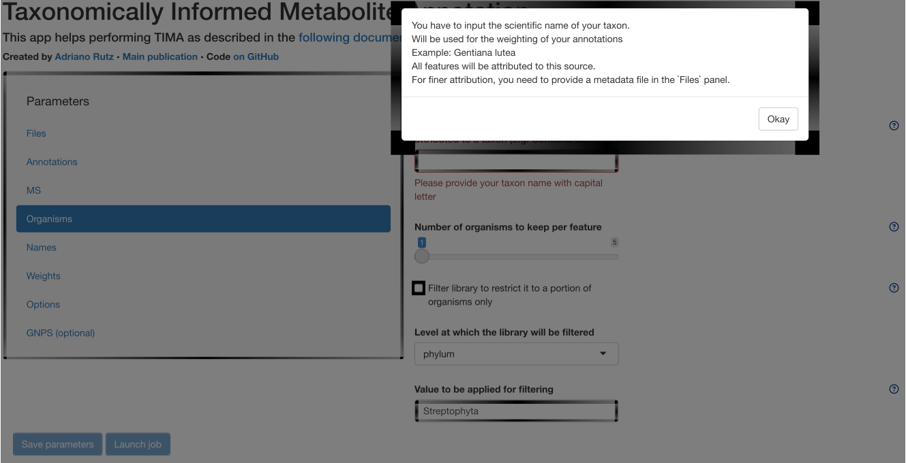
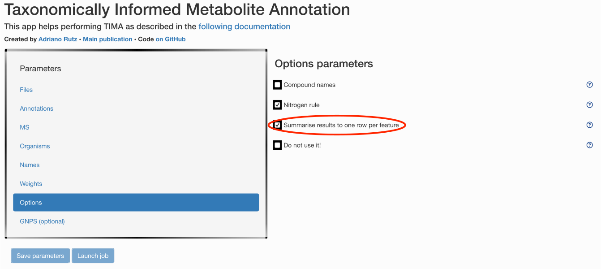

1 Gathering everything you need
Adriano Rutz
2024-06-28
Source:vignettes/I-gathering.Rmd
I-gathering.RmdThis vignette describes…
- All parameters you need
- All inputs you need
Parameters
All steps require parameters. Some default parameters are available
and can be accessed in the inst/params/default directory.
If you prefer accessing them through the GUI, you can do so. Each
parameter contains a small help menu, you can click on, as illustrated
below.


For example, if you want to have an output compatible with Cytoscape, with multiple annotations per features:

All parameters will be saved and reported at the end of your analysis.
Inputs
Your own files
You should provide your own files in the main menu. For this tutorial, we will use some example files as below:
Libraries
The following paragraph describes the libraries available by default.
Spectra
As a first step, you need spectral libraries to perform MS2-based annotation.
Experimental
You can of course use your own experimental spectral library to perform MS2 annotation. We currently support spectral libraries in MSP or MGF format.
To get a small example:
get_file(
url = paths$urls$examples$spectral_lib_mini$with_rt,
export = paths$data$source$libraries$spectra$exp$with_rt
)MassBank
MassBank is downloaded and used by default.
We are currently working to get all MONA and GNPS experimental spectra easily available.
However, programmatic download of MONA is currently not supported, and GNPS spectra require some pre-processing.
So for now, either use your GNPS job ID and download MONA manually,
helpers to use them later on are already available. (see
inst/scripts/prepare_libraries_spectra_exp_mona.R).
In case you want to format your own spectral library to use it for
spectral matching, adapt the steps in
inst/params/user/prepare_libraries_spectra.yaml and
inst/params/user/annotate_spectra.yaml.
LOTUS
We generated an in silico spectral library of the structures found in LOTUS using CFM4. For more info, see https://doi.org/10.5281/zenodo.5607185. It is made available in both polarities.
You can also complement with the in silico spectra from HMDB (not running by default as quite long):
HMDB
source(file = "inst/scripts/get_isdb_hmdb.R")Retention times
This library is optional. As no standard LC method
is shared (for now) among laboratories, this library will be heavily
laboratory-dependent. It could also be a library of in silico predicted
retention times. If you want to prepare you own library, have a look at
inst/params/user/prepare_libraries_rt.yaml, and then:
source(file = "inst/scripts/prepare_libraries_rt.R")Structure-Organism Pairs
LOTUS
As we developed LOTUS1 with Taxonomically Informed Metabolite Annotation in mind, we provide it here as a starting point for your structure-organism pairs library.
The process to download LOTUS looks like this:
As you can see, one target seems outdated. In reality, we force it to search if a new version of LOTUS exists each time. If a newer version exists, it will fetch it and re-run needed steps accordingly.
ECMDB
By default, we also complement LOTUS pairs with the ones coming from ECMDB.
HMDB
And we do the same with the ones coming from HMDB.
For these first steps, you do not need to change any parameters as they are implemented by default.
Other libraries
As we want our tool to be flexible, you can also add your own library to LOTUS. You just need to format it in order to be compatible. As example, we prepared some ways too format closed, in house libraries. If you need help formatting your library or would like to share it with us for it to be implemented, feel free to contact us.
Before running the corresponding code, do not forget to modify
inst/params/user/prepare_libraries_sop_closed.yaml
source(file = "inst/scripts/prepare_libraries_sop_closed.R")Adducts
The next library you need is an adducts library! As a main limitation of current annotation tools is adducts detection and coverage, an adducts library can also be generated in order to perform MS1 annotation later on.
As you can see, it depends on the previously built library.
We now recommend you to read the next vignette.